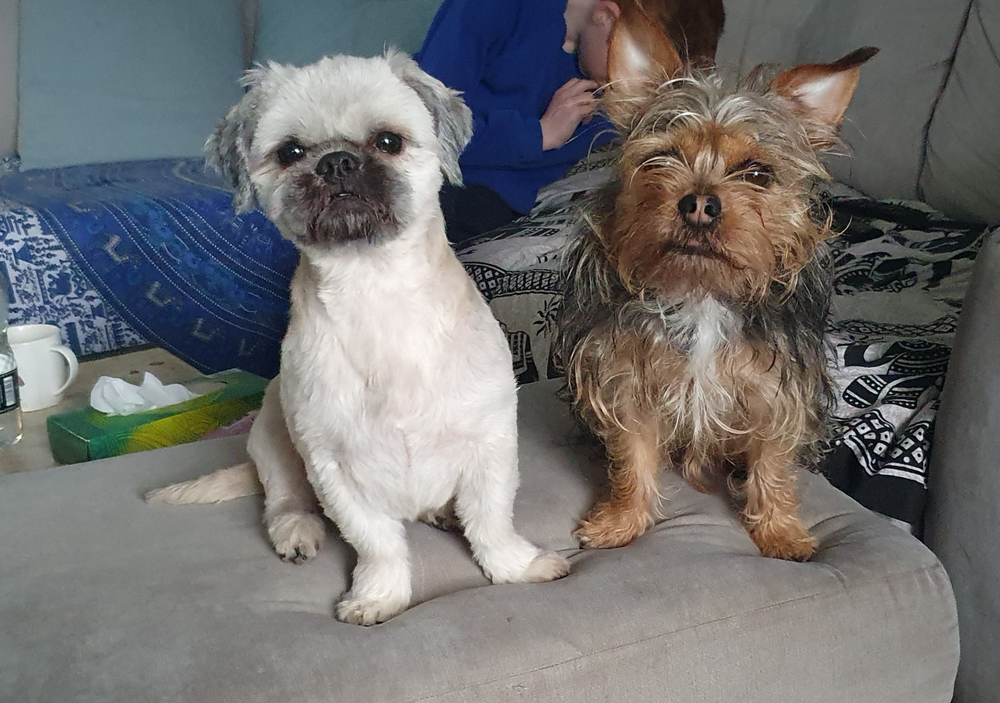

Hello -thank you for visiting my site :)
I'm teaching myself web development with the help of Angela Yu and Udemy, so far so good! Coding draws my ADHD brain into hyperfocus mode, making it really easy to stay motivated to learn. I hope to land a junior developer role very soon.
This will be career change number 3 for me at the age of 40(!), having started out in BBC Local Radio, before training as a studio manager at the BBC World Service in London.
After a move back up north and a little break to be at home with my lovely children, we moved to beautiful Chester where I retrained as an ESOL tutor, teaching English as an additional language to adults who are building a life in the UK.
I currently work as ESOL lead for a local non-profit organisation, working predominantly with refugees and asylum seekers. I'm extremely passionate about supporting the refugee community, and it's my goal to create and app or website that acts as a 'one-stop shop' to provide people with all the info they need to live happily in the UK, including info around benefits, accesssing healthcare, finding faith groups, navigigating the transport systemt and, of course, finding a place to learn English. Accessing services and knowing how to get help is a common problem faced by many of those new to the UK, and one I would love to help solve wuth technology :)
When I'm not learning to code or working, I love exploring with my family in our little camper van, climbing, and hanging out with my fab little dogs, Benji and Buster.
